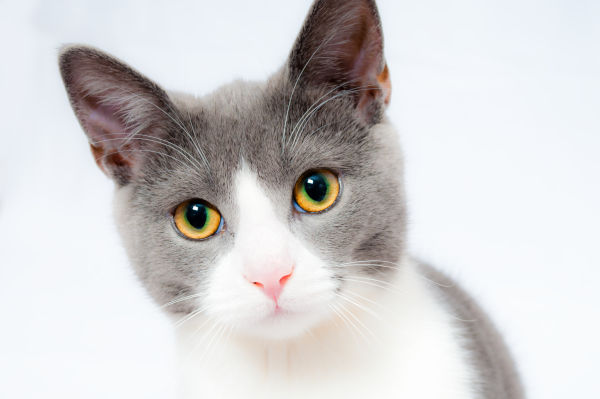

Gato com Troféu, 2021

Instructions
- Edite a imagem do troféu para fazer com que o fundo branco fique transparente.
- Redimensione a imagem para 150 pixels de largura e salve-a como PNG.
- Redimensione a foto do gato para 600 pixels de largura e salve-a como um JPG de qualidade 80.
- Atualize o arquivo index.html para usar as imagens modificadas.